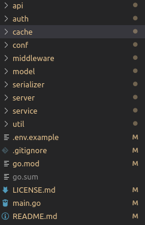

本期内容是承接上期已经做好了登陆界面来写的，不过本期是以golang为主，可能需要大家把最基本的语法结构熟悉一下：菜鸟教程。这样的话方便展开，自然而然的，本篇也是直接实战为主。这次需要依赖mysql，这个必须安装，redis最好也安装一下，以后会用到。
这里我打算启动一个go的web application，那么很多人的话都会自己从头开始，不过这的确有点麻烦，网上其实很多大佬写了一些脚手架，这里我打算直接使用bydmm大佬的singo项目来开发，可以看他的B站空间的系列教程：bydmm的个人空间。
所以首先在github把项目弄下来把：
git clone https://github.com/Gourouting/singo.git
然后把项目文件夹目录改称自己的项目名称把，就是把singo这个文件夹名字给改了，然后对应里面的所有文件import都需要把singo改成你的项目名称。
我们可以顺便看一看项目结构，说明一下：

这些文件夹的名字都很明显暴露意图，这里我打算暂时不一个个去讲，因为这里我打算说一些所有go项目应该都有的基础东西，就是main.go。如果学过编程都明白，有且只有一个程序的入口，因此这个入口就是main.go，并且他只需要满足他的package是main，并且有一个func main()就可以了：
package main
func main() {
}
这个脚手架他的环境配置使用.env来配置的，他也有一个.env exmaple，如果你想知道在哪里实现的可以看conf文件夹下面的conf.go，就是通过.env设置项目下的环境变量，然后在conf.go获取而已，所以你修改一下文件名和把MYSQL_DSN修改成自己的即可，如果不懂DSN的，可以参考如下格式写：
username:password@protocol(address)/dbname?param=value
一个例子，因为默认的localhost:3306，可以不用写protocol字段
root:123456@/ysyh?charset=utf8&parseTime=True&loc=Local
go mod在这里面是包管理器，在第一篇应该已经配好了goproxy和go111module，这个包管理器在如今版本很牛逼，你只需要做2件事情就可以完成，为了演示，我们先把原来项目中的go.mod和go.sum给删了，然后在shell输入:
go mod init your_projectname
这样你就弄好了go mod，之后你在运行项目的时候他会自动检测你缺少的依赖，并且安装，你可以直接试一试：
go run main.go
本来你只有一行的go.mod文件多了一堆依赖声明，并且可以运行项目。
后端第一件事是做接收请求，只有你能接受了请求，并且把他发到对应的地址才有接下来的操作，所以我们从路由看起。对于gin的路由，官方已经写的很清楚了，在项目里面就是server下的router.go，下面是关键的几个代码
func NewRouter() *gin.Engine {
r := gin.Default()
r.Use(middleware.Cors())
v1 := r.Group("/api/v1")
{
v1.POST("ping", api.Ping)
auth := v1.Group("")
auth.Use(middleware.AuthRequired())
{
auth.GET("user/me", api.UserMe)
}
}
}我只截取了几个知识点，首先 gin.Default()就是路由了，你直接r.Run(":port")就可以直接在该端口上执行该路由。
接下来有个r.Use，这个是中间件的意思，中间件其实就是到你路由的方法前，他会做这个方法里面的内容，例如例子中的Cors，因为我几乎所有的请求都要做Cors，所以我不可能在每个方法里面都写一遍这段代码，因此我们放在中间件里面就省事了。可以看一下gin的middlerware的格式：
import(
"github.com/gin-contrib/cors"
)
func Cors() gin.HandlerFunc {
config := cors.DefaultConfig()
return cors.New(config)
}拿Cors为例子，只是把一个gin.HandlerFunc传入Use方法里面就可以实现中间件注册。
Group方法，其实Group方法就是把他下面的地址加上一段地址，例如上例子，v1下面的post方法呢，他的地址就是/api/v1/ping，调用的三api.ping这个方法。其实单看这个功能感觉也一般，但是可以看一下下面的auth的例子，他在auth下面直接Use，做了个登陆认证，所以在auth下面的地址都有一个middlerware，没有登陆的都没办法访问。因此分组之后可以给组内成员加上middlerware，这样就可以节省很多代码量。
路由之后呢，就会到达你想要处理这个请求的函数，我直接拿注册为例子来说明。
func UserRegister(c *gin.Context) {
var service service.UserRegisterService
if err := c.ShouldBind(&service); err == nil {
res := service.Register()
c.JSON(200, res)
} else {
c.JSON(200, ErrorResponse(err))
}
}这个就是注册的处理函数，但是这个是这个脚手架做了封装的，但是已经有灵魂了。首先可以函数有个参数进来，是gin.Context指针的值。Context顾名思义的上下文，其实就是请求的cookie，headers，content之类的。所以我们请求的信息都要从这里面拿到。
之后有个这个c.ShouldBind(&service)，这个意思是可以对请求的内容做一个验证，如果符合service这个strcut呢，他就告诉你请求的内容是没有问题的，这里可以看一看这个struct的写法
type UserRegisterService struct {
Email string `form:"email" json:"email" binding:"required,email"`
UserName string `form:"user_name" json:"user_name" binding:"required,min=5,max=30"`
Password string `form:"password" json:"password" binding:"required,min=8,max=40"`
PasswordConfirm string `form:"password_confirm" json:"password_confirm" binding:"required,min=8,max=40"`
}除了最后的字段应该都可以看得懂的。就是最后面有段内容，gin可以读取到那里，并且根据这里的内容去判断传入的参数是否有问题，可以看一下Email这个例子，他要求前段可以用form提交或者json提交，他对应的字段是email，并且后面有个binding，这个是验证的规则了，required代表他必须存在，第二个email是代表他是一个email格式的文本。
最后呢，我们处理完了就要返回结果了，这里直接c.JSON就可以以json的格式返回了。
后端操作不可避免要与数据库交互的，所以这里数据库操作也是很重要的，我们这里用到的数据库叫做gorm，可以看看gorm官方文档。不过gorm只支持mysql，PostgreSQL和Sqlite3，其他的数据库可能要用别的orm。这里可以在model下init.go看到数据库的基本操作
func Database(connString string) {
db, err := gorm.Open("mysql", connString)
if err != nil {
util.Log().Panic("连接数据库不成功", err)
}
//设置连接池
//空闲
db.DB().SetMaxIdleConns(50)
//打开
db.DB().SetMaxOpenConns(100)
//超时
db.DB().SetConnMaxLifetime(time.Second * 30)
migration()
}我这里也是把跟数据库链接比较重要的代码拿出来了，这里用单例我就没贴了。首先怎么去链接数据库，就是gorm.Open就完事了，然后第一个参数是数据库种类，第二个是DSN，DSN上面已经讲过了。
之后呢我们就要设置一些参数，上面也写的很清楚了，最后有个migration，这个是gorm的很厉害的功能，他可以自动的去生成表和修改表结构。其实就是DB.AutoMigrate这个方法，每次运行的时候，他都会先去把里面的struct加入到数据库中，例如这里的user表，就是用如下的stcut自动迁移：
// User 用户模型
type User struct {
gorm.Model
UserName string
PasswordDigest string
Email string
Status string
Avatar string `gorm:"size:1000"`
}这里面的gorm.Model是这样的，这里面可能会涉及到gorm的软删除的内容，所以建议加上gorm.Model在你任意的表结构中：
type Model struct {
ID uint `gorm:"primary_key"`
CreatedAt time.Time
UpdatedAt time.Time
DeletedAt *time.Time `sql:"index"`
}我们已经把最基本的后端逻辑给弄懂了，~虽然没有弄实现逻辑~。但是我们Vue怎么给后端发请求？可能懂得人应该知道是ajax了，在Vue里面的话大家常用的是axios，是基于Promise机制的，首先可以安装一下。
npm install axios
然后呢在main.js里面加上（其中第二行是为了防止做Cors的时候出问题）：
import axios from 'axios';
axios.defaults.withCredentials=true
Vue.prototype.$axios = axios;
之后我们在我们的项目文件做请求就可以：
this.$axios.get("http://127.0.0.1:3000/api/v1/user/me").then((res) => {
//todo
}).catch(err => {
//todo
}).finally(() => {
})如果是post请求就在后面把请求的参数加上去。这个请求发送之后如果正确了，就会到then里面，结果就是用一个变量去接受即可。出现问题就可以catch错误，最后也可以用finally，这个函数不管成功与否都会去做。